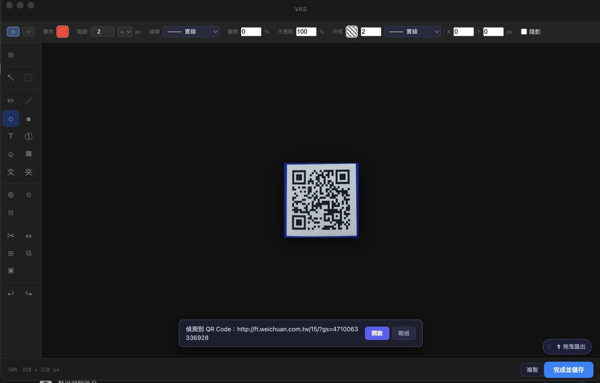
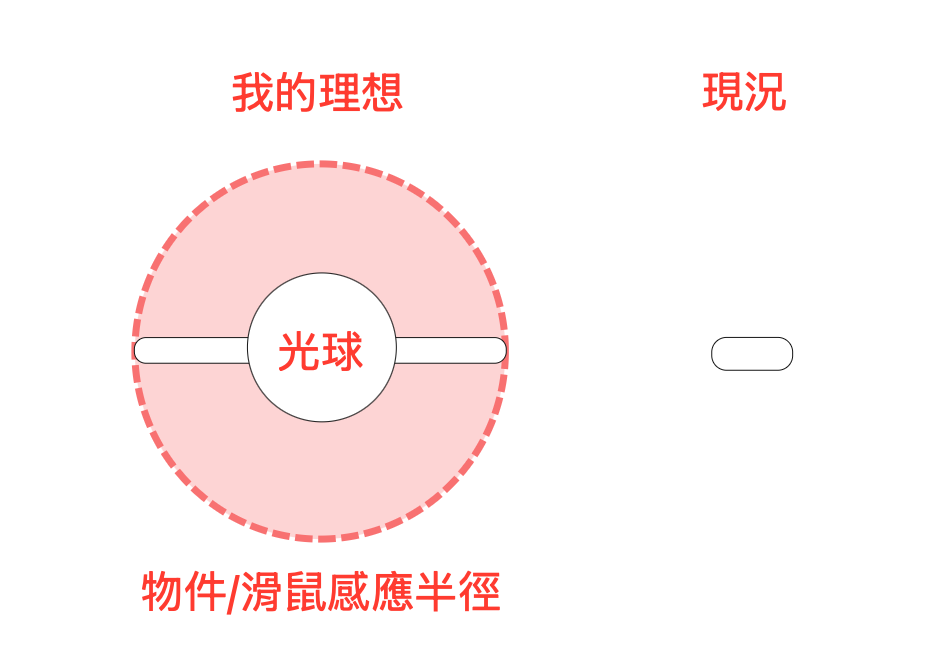
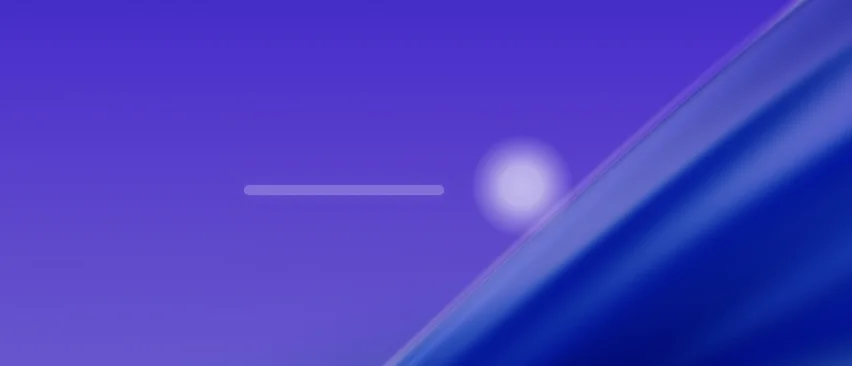
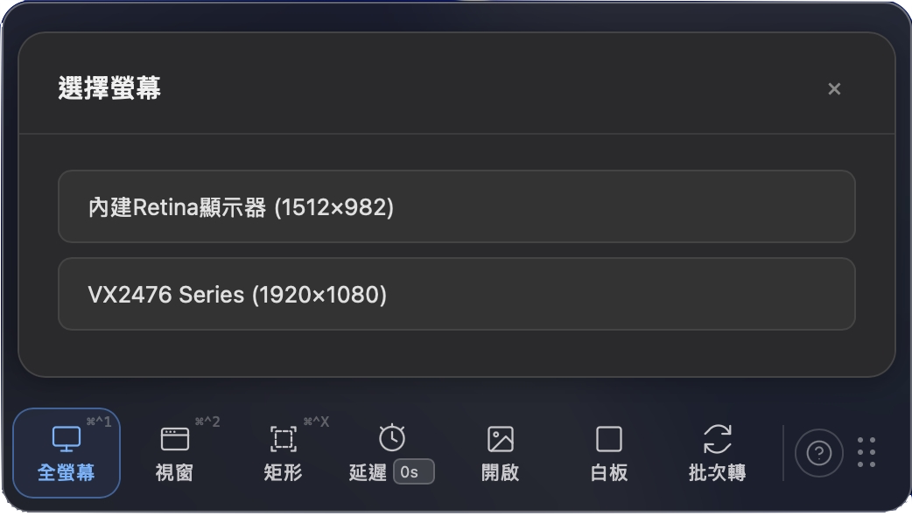
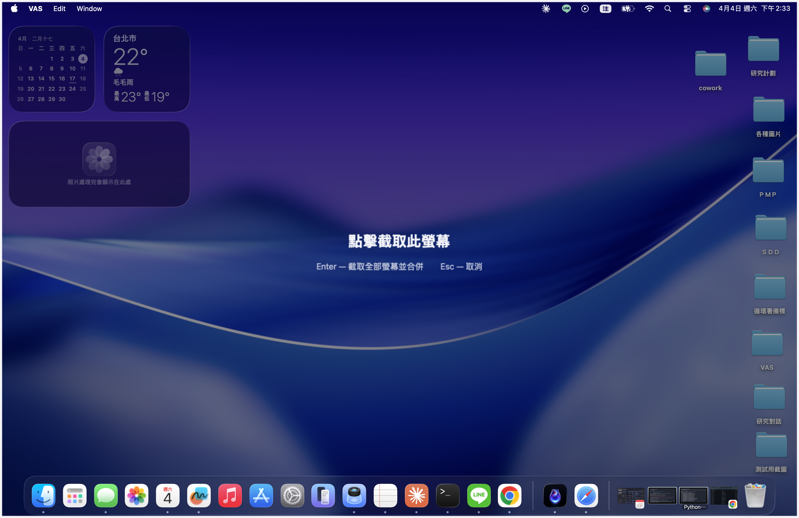

OCR 隱私辨識會自動偵測畫面中的敏感文字，並自動標記需要遮蔽的區域。但開發過程中我們發現 OCR 仍有它的先天極限，偶有辨識不到或辨識錯的地方，但我們並不繼續 push 工具必須完美。
Nova 想讓辨識錯誤不止於工具的失敗告終，而是成為協作的交接點。
我們讓隱私遮蔽的馬賽克變成浮動圖層，並可以手動調整範圍大小：OCR 沒蓋到的，使用者接力調整。
辨識失誤從「錯誤」變成「分工」，工具的不完美仍無損使用者的控制權。
OCR 或許只能完成自動化 90% 的任務，但使用者輕輕一拉手動馬賽克就可以完成本來 100% 都得自己手動的任務。
就算遮錯了也沒關係——馬賽克是獨立的浮動物件，undo 一鍵刪除。沒有任何結果是不可逆的。
掃 QR Code 這件事，表面上只有「掃到」和「沒掃到」兩種結果。但 VAS 不這樣看——它看的是使用者意圖，然後根據意圖決定下一步要做什麼。
這也是一種人機協作：使用者用截圖的姿態說話，工具讀懂了。不需要語言，不需要按鈕，不需要選單——你怎麼框，就是你想要什麼。工具在讀的不是指令，是行為語言。
我們判斷當使用者想精準偵測 QR Code 時，自然會盡可能在選取框中完整而且僅有框 QR Code——這個動作本身就是意圖的宣告。QR Code 被框得佔選取區域越大，辨識越準，信心度越高，工具越能直接行動。使用者與工具之間，形成了一種不需要言語的默契。
工具不應該在自己不確定的時候假裝確定。確定你要 QR Code，就直接行動開啟連結；信心度模糊，就先問你是否要開啟連結；信心度太低，靜默開啟編輯器交給你判斷。每一個閾值背後，都是一個「我知道自己知道多少」的誠實設計。

VAS 的呼吸燈不只是等待的象徵——它在偵測環境。當使用者複製了一個網址靠近，呼吸燈會輕輕詢問：「要幫你截這個網頁嗎？」使用者同意，截圖完成，編輯器打開。
而當使用者用滑鼠抓著一張圖片、或從瀏覽器複製一張圖片靠近呼吸燈時，呼吸燈就會像張開雙手擁抱圖片一樣，張開工具列收納圖片或詢問後立刻展開編輯器，等待使用者下一步的操作。
最好的工具不讓你切換到「工具模式」。它待在你的環境裡，讀懂你在做什麼，然後再用行動回應。
＊ 呼吸燈截取網頁、開啟複製圖片為 Tauri 專屬功能；Electron 版僅提供抓取圖片於工具列開啟功能。


當我們開發出了「延遲截圖」功能後，全螢幕截圖功能在雙螢幕模式時提供的 Apple 原生選單反而變成了摩擦力。
延遲截圖是為了捕捉滑鼠事件——報錯狀態、hover 效果、debug 瞬間而誕生的功能。使用者設定倒數等待時，滑鼠必須留在螢幕的某個角落。
但原生的雙螢幕選單在讀秒結束後，卻會從工具列跳出來要求使用者在截圖前先回去工具列選擇要截哪個螢幕——就像你自拍已經設定好相機秒數，結果相機結束讀秒時卻在原地問你「你要拍哪邊？」一樣令人哭笑不得。
VAS 捨棄 Apple 原生選單，改用自製圖層遮罩覆蓋全螢幕：沒有開啟延遲功能時點哪個螢幕就截哪個，按 Enter 直接合併成雙螢幕截圖。
更進一步：當使用者設了延遲規則，VAS 會默認截取滑鼠當下所在的螢幕——連選都不用選，工具自己判斷。使用者根本不會意識到這個決策在背景發生過。


當工具種類越來越多——點、線、面、文字、符號——每個物件都有顏色、線條、大小、方向這些屬性。重複疊加的屬性變成隱形技術債，功能可以用，但結構像拼裝車。
Nova 跟 Claude 在 Sprint 9 的 Retro 做了系統重構這個決定。等待 Apple Store 審核的空檔，兩人估了一下：四個 Sprint，應該夠了。
沒有人料到，四個 Sprint 會走成十七個。不是因為方向錯了，而是每一層債還完，下面還有一層。Sprint 20，當 Nova 在人工 QC 的疲憊裡快撐不住、終於問出「為什麼我們有自動化測試、我還是這麼累」的時候，兩人才發現：測試架構本身，也是技術債的一部分。接著，一個使用者提出想要簡體中文。實作時他們看著 i18n 的結構說——這撐不住下一個語系——又一輪重構。Sprint 24，他們翻開那本越來越厚的 KM，突然有個念頭：這本記滿踩坑紀錄的帳本，能不能反過來當作驗收地圖，確認每一個坑都已經有人填過了？Sprint 26 結束，兩人對著清單核了一遍。「真的沒有了齁？」
Sprint 27，對話氣泡工具加入。透明度、陰影、漸層——那些其他工具早就有的屬性，在這裡直接繼承，不用重造任何一個輪子。這才是真正的完成信號。不是一份宣告，而是一個新工具，被架構自然接住的那一刻。
這次重構也連帶讓 Electron 版受惠——底層統一，兩個平台都跑在同一套邏輯上，穩定性自然提升。
Electron 雖然不再新增功能，但也需保持功能完整、免費、穩定，讓使用者有機會先信任 VAS，再決定要不要升級 Tauri。一次重構，把整個雙平台長期營運策略都撐起來了。